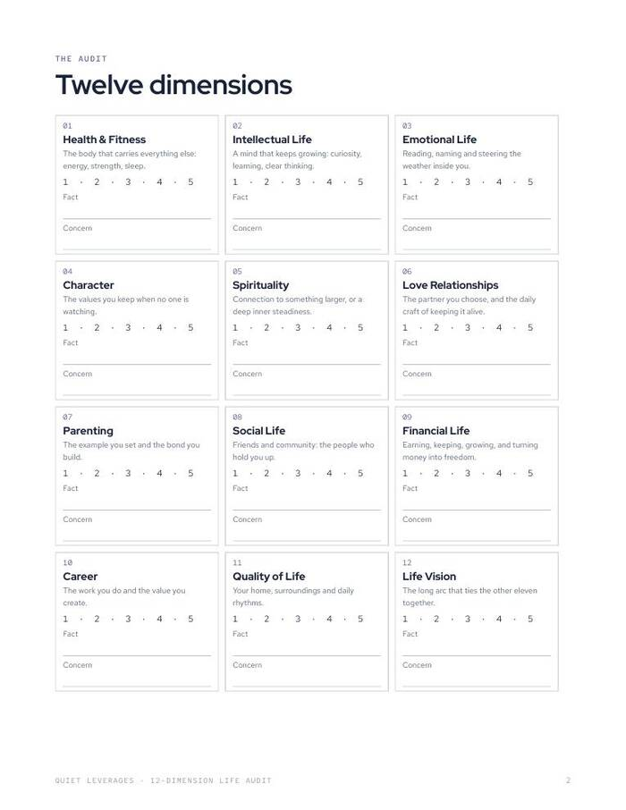
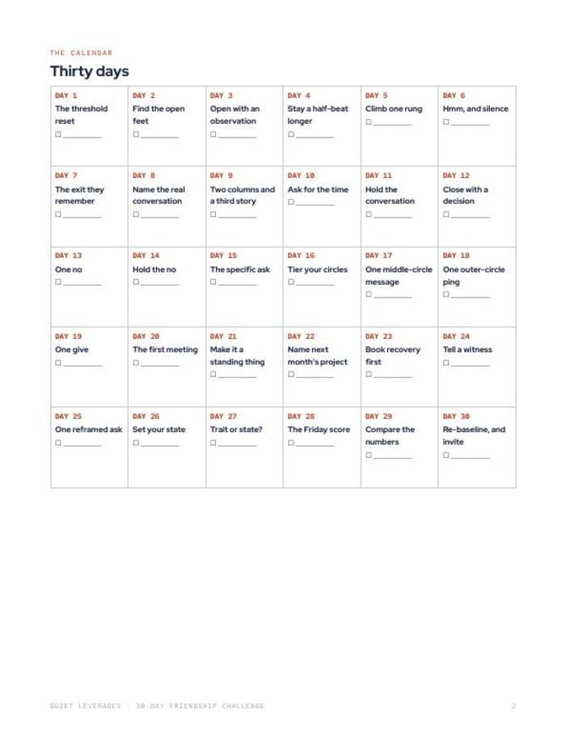
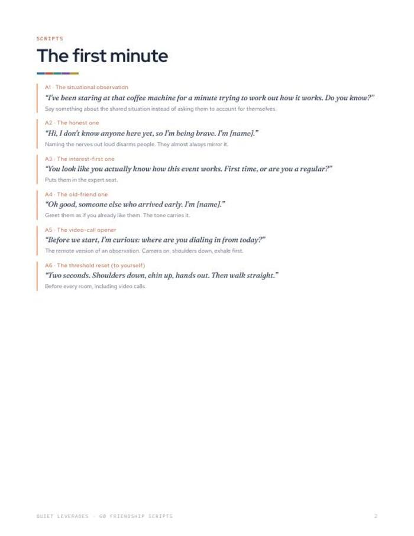
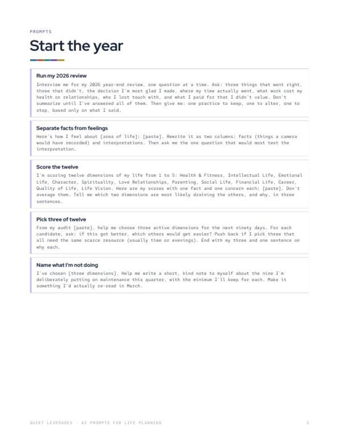
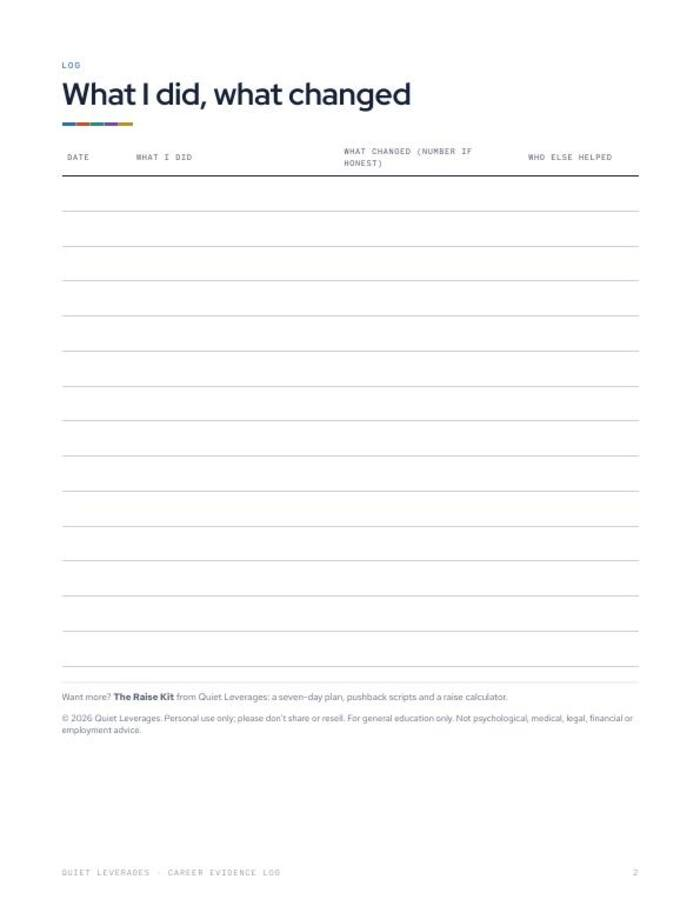
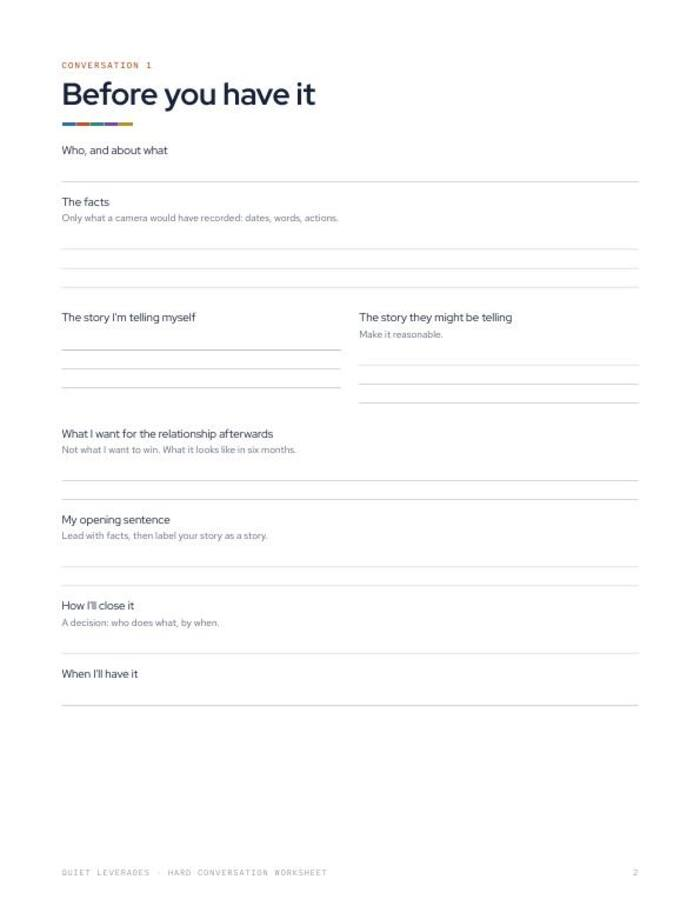
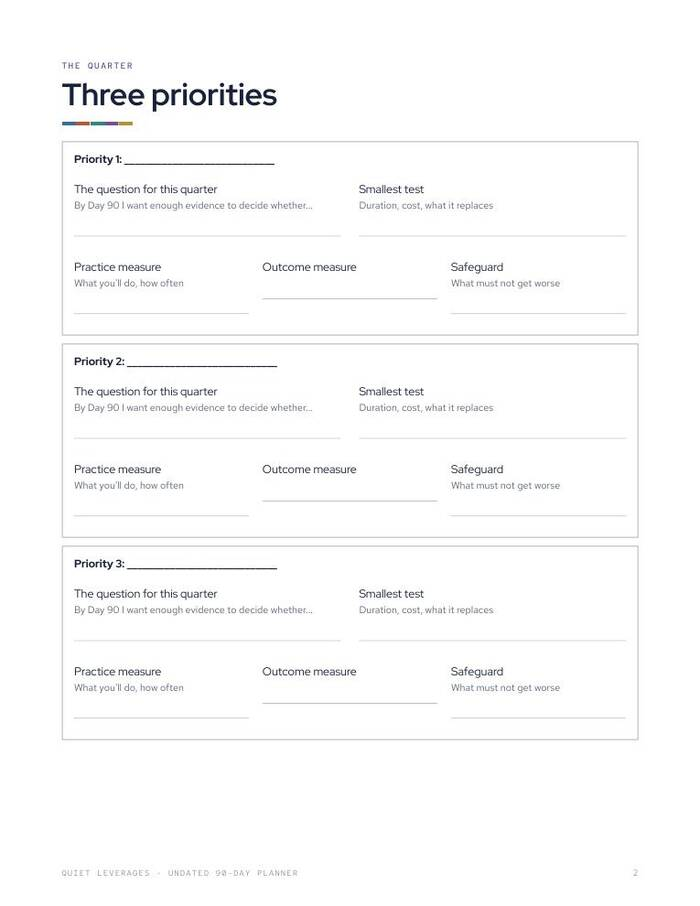
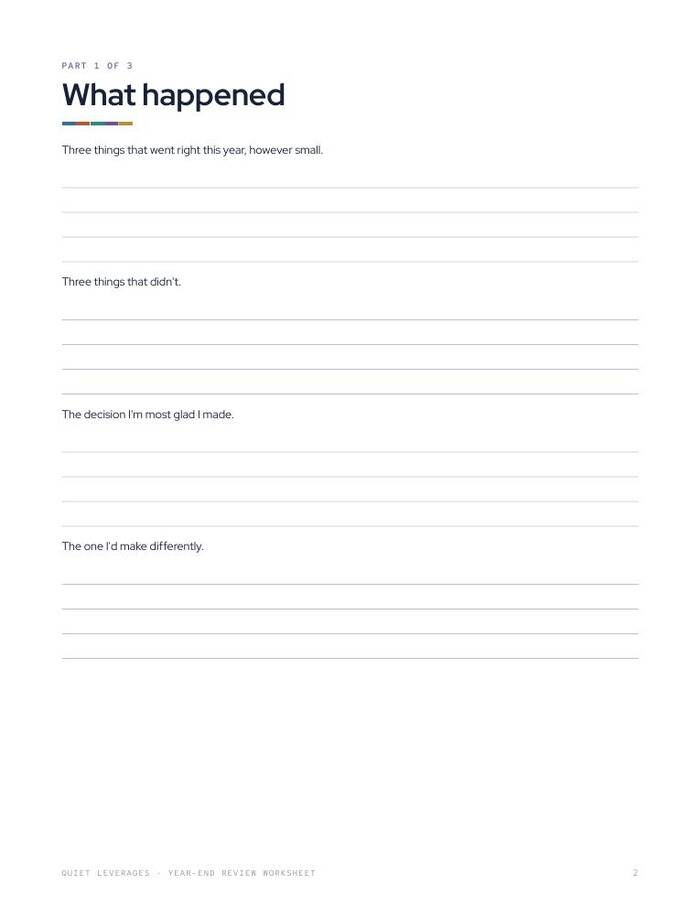

Tools you fill in on a Sunday. Not books you read and forget.
Worksheets, trackers, scripts and planners for the places a good year leaks: your job, your money and your friendships. Start with a free one.
Instant download. Print them or use them on a tablet. Sold on Gumroad.
of adults aged 30-44 are frequently or always lonely, the highest of any age group.
Harvard Making Caring Common, 2024of workers say they stay in their job out of fear and economic uncertainty.
Monster, Oct 2025of US adults began 2026 feeling financial stress.
NEFE, Jan 2026Three free tools, one for each place life leaks
Each takes one sitting. Pick the one that matches the thing on your mind this week.

The Friendship Audit
A ten-minute check of who is in your life, who is fading, and three texts to send this week.

The Stay-or-Go Worksheet
Should I quit my job? Decide on paper, not at 2 a.m.

What to Fund First
Seven money steps in the order that works. Find your step, automate it, stop second-guessing.
Every tool, by the part of life it covers
Kits, $19-39
A guide, a tracker and the scripts, built to be run over days or weeks.

The 30-Day Friendship Practice
One small social drill a day for thirty days, with sixty scripts for the moments that matter.

The Raise Kit
Seven days of preparation, one four-line ask, and what to say to every pushback.

The Couples Money Reset
Five conversations, one account structure, and a twenty-minute monthly money date.

The Career Kit
Thirteen weeks, one move a week. A career that funds your life instead of draining it.
Small tools, $7-12
One job each. A cheap first step, and each links to the kit that goes further.

12-Dimension Life Audit
Score twelve areas of your life, then choose the three that would lift the rest.

30-Day Friendship Challenge
Thirty small social drills, one a day, from saying hello to hosting.

52-Week Sunday Review Journal
Fifteen minutes every Sunday, for a whole year.

60 Friendship Scripts
Sixty ready-to-adapt lines for making and keeping friends as an adult.

90-Day Career Reset
Thirteen weeks, one career move a week, with honest decision gates along the way.

AI Prompts for Life Planning
Thirty prompts that make an AI a useful planning partner rather than a cheerleader.

Career Evidence Log
Log your work wins every Friday so reviews, raises and interviews start from evidence.

Debt Payoff Planner
Rank your debts by avalanche or snowball and see exactly where the extra money goes.
Emergency and Sinking Funds Tracker
Size your emergency fund properly and turn predictable costs into small monthly transfers.

Grown-Up Paperwork Checklist
The four documents every adult needs, plus a one-page list of where everything is kept.

Hard Conversation Worksheet
Prepare the conversation you have been avoiding: facts, story, and what you want afterwards.

Life Vision Worksheet
Write the ordinary Tuesday you want in ten years, then work back from it.

Monthly Money Date
A twenty-minute monthly money date for couples, with a timed agenda.

Salary Negotiation Prep
A seven-day plan to prepare for a raise conversation, plus what to say to every pushback.

Small Gathering Planner
Host a small gathering that people remember, starting with one sentence about why.

Undated 90-Day Planner
One quarter, three priorities, thirteen fifteen-minute Sunday reviews.

Year-End Review Worksheet
Close the year honestly before you plan the next one.
No tools in this group yet.
The Quiet Reset 2027
Score twelve areas of your life, pick three to work on, and keep the other nine on a simple maintenance minimum. Two 45-minute blocks and a fifteen-minute Sunday review each week: 105 minutes, and that is the whole commitment.
$47 early-bird until December 31, then $67. The three kits inside cost $57 on their own.
See what is inside
Read widely. Test it. Keep what survives.
Every tool starts from reading, then gets checked against an ordinary week before it ships.
We read widely
The Social Architecture Playbook, The Finance Architect and The Career Playbook sit behind the tools.
We test it on an ordinary week
If a step needs a free weekend and perfect motivation, it does not make it in.
We keep what works on a tired Tuesday
Short steps, plain words and scripts you can say out loud.
career books behind The Career Playbook, grouped into five pillars across twenty chapters.
tools across work, money and people, three of them free.
pages in The Quiet Reset 2027 planner, linked for use on a tablet.
What readers say
Before you pick one
Which tool should I start with?
Start with the free tool that matches what is on your mind: the Friendship Audit for people, the Stay-or-Go Worksheet for work, or What to Fund First for money. Each takes one sitting.
Where do I buy, and what do I get?
Every tool is a digital download sold on Gumroad. You get the files straight after checkout, usually a printable PDF and, on some tools, a Google Sheet or Notion import.
Do I need to print anything?
No. Print the PDFs if you like writing by hand, or fill them in on a tablet with any PDF app.
Is this financial, legal or career advice?
No. Everything is general education. The money tools are not financial advice, and the career tools are not employment or legal advice.
What is the difference between a kit and a small tool?
A small tool does one job, such as a worksheet or a tracker. A kit gives you a guide, a tracker and scripts to run over several days or weeks.
Who are these for?
Mostly mid-career managers and senior individual contributors, roughly 30-45, who are doing most things right and still feel a little behind. People earlier or later in their careers use them too.
Pick one thing to fill in this week.
Free tools take one sitting and need no setup.
Start with a free tool